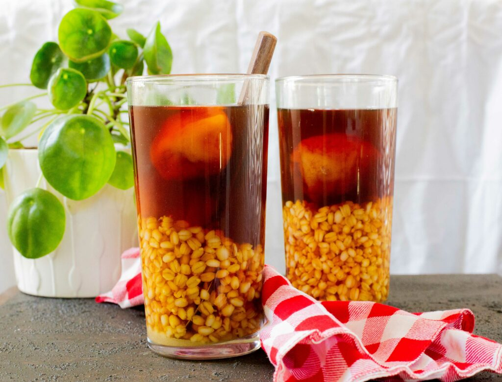
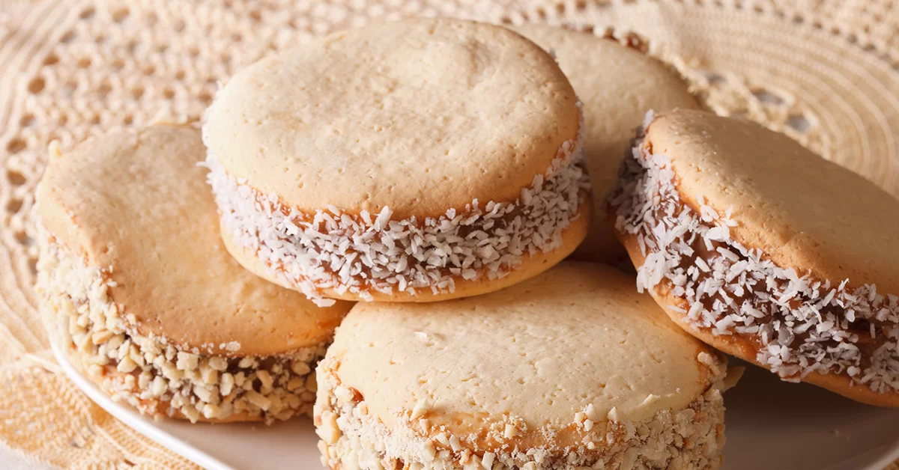

Postres Tradicionales de Chile

Kuchen
Postre típico del sur de Chile, especialmente el de manzana.

Leche Asada
Similar al flan, pero con textura más firme y superficie dorada.

Mote con Huesillo
Tradicional postre-bebida con trigo mote y duraznos secos.

Alfajor Chileno
Relleno de manjar y espolvoreado con azúcar flor.